Glossolalia (Section 36)
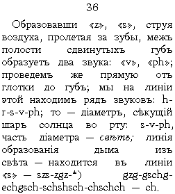
Having formed the "z," the "s," streams of air, as they fly past the teeth, form two sounds between the orifice of the extended lips: "v," "ph"; we'll draw a straight line from the larynx to the lips; along this line we find a series of sounds: h-r-s-v-ph; that is -- the diameter, intersecting the sphere of the sun in the mouth; s-v-ph, a part of the diameter, is -- the light [svet]; the line for the formation of smoke from light is -- found on the line "s" -- szs-zgz-* gzg-gschg-schgsch-schchsch-chschch -- ch.
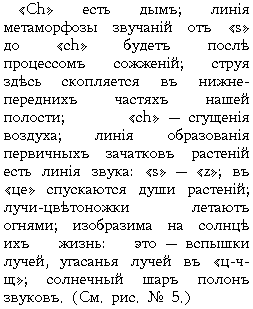
"Ch" is smoke; the line for the metamorphosis of sounds from "s" to "ch" will come later through a process of burning; a stream accumulates here in the lower-forward parts of our orifice; "ch" is -- a thickening of the air; the line for the formation of the initial beginnings of plants is the line of sound: "s" -- "z"; in "ts" the souls of plants descend; rays-pedunckles fly about in the fires; their life is depicted on the sun: these are -- flashes of rays, the extinguishing of rays is in "ts-ch-shch"; the sun's sphere is filled with sounds. (cf. Ill. #5).
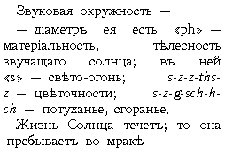
The circle of sound has--
-- "ph" for its diameter -- materiality, the corporeality of the sounding sun; inside the circle "s" is -- a light-fire; s-z-z-ths-z are -- flowerings; s-z-g-sch-h-ch is -- extinguishing, burning out.
The life of the Sun flows on; but now it is in a state of murkiness --
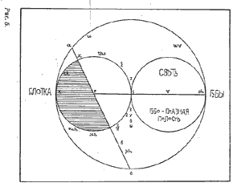
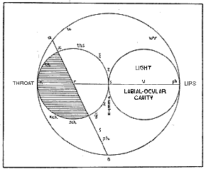
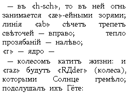
-- in "h-sch," then inside her the fire is engaged with "z"- like dawns; to the right -- the line "ab" cuts the trembling of lights; to the left is -- the warmth of vegetation; "r" is -- the nucleus --
--it rolls the wheel of life: and "raz" will become the "Raeder" (the wheels), on which the Sun roared; Goethe listened to them:
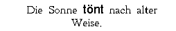
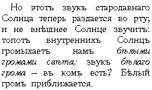
But this sound of the ancient Sun now resounds in the mouth; and it is not the external Sun that sounds: the clatter of internal Suns thunders to us in white thunders of light; in whom is -- the sound of the white thunder? White thunder draws near.
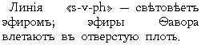
The line "s-v-ph" -- wafts like light [svetoveet] as ether; ethers of Tabor fly into the opened flesh.
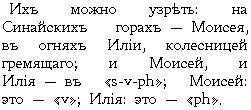
They can be viewed: on Mount Sinai -- Moses, in the fires of Elijah, rumbling in his chariot; and Moses, and Elijah are -- in "s-v-ph"; Moses: this is -- "v"; Elijah: this is -- "ph."
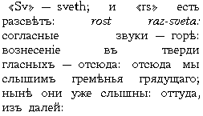
"Sv" -- sveth; and "rs" is the day dawning [razsvet]: by dawn's early light [rost razsveta:] the consonant sounds are -- grief: the assumption of the vowels up to the firmament -- comes thence: thence we hear the thundering of what is to come; today they can already be heard: from there, from the distances:
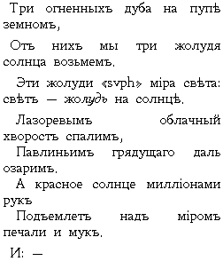
Three fiery oaks on the earth's navel,
From them we take three acorns of the sun.
These are the acorns "svph" of the world of light: light is -- an acorn on the sun.
We burn the brushwood lapis lazuli,
We illumine peacock-like the distance of the future.
And a red sun with millions of hands
Rises above the world of sadness and sufferings.
And:
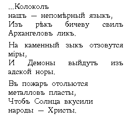
...Our bell is -- an immeasurable tongue,
From rivers the Archangel's countenance wound a tow rope.
Worlds are summoned to the rocky tip,
And Demons exit their hellish lairs.
Layers of metals pour off into the fire,
So that Sun is savoured by the peoples -- the Christs.
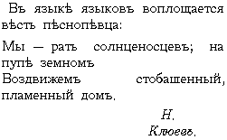
In the lingua linguarum is incarnated the gospel of the songster.
We are -- a host of sunbearers; on earth's navel
We raise our centi-towered, fiery home.
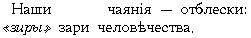
Our expectations -- are reflections: "visions [ziry]" of the dawn [zari] of humanity.